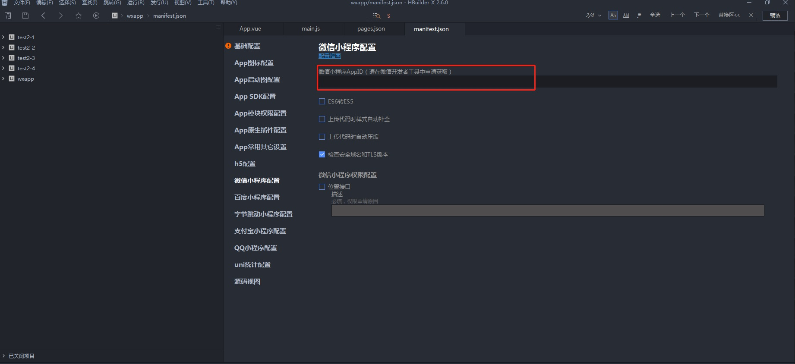
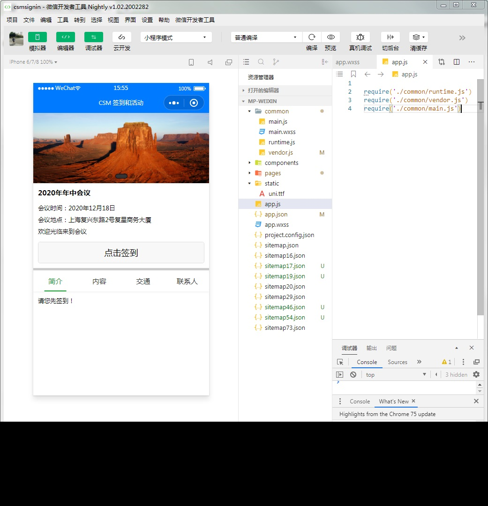
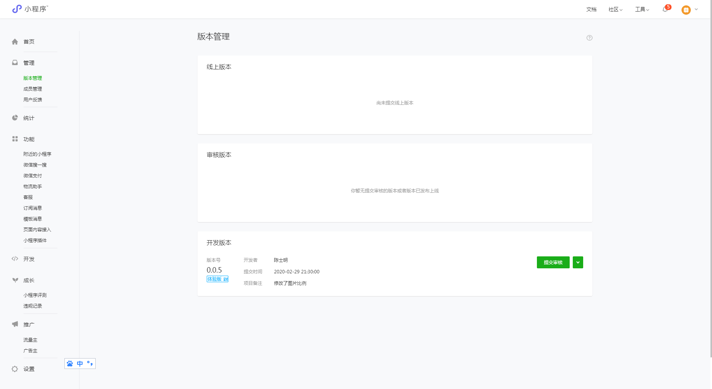

CSM签到和活动小程序安装步骤
1. 修改小程序代码的服务端路径，具体配置文件在addons\csmsignin\wxapp\app-config.js，修改remote_baseurl地址注意：此地址只能使用域名，并且必须是HTTPS的
2. 到微信后台服务端地址加入到合法域名中，具体配置：
小程序官方 - 开发 - 开发设置 - 服务器域名 - request合法域名
3. 下载并安装微信开发者工具Stable Build版本,下载地址：https://developers.weixin.qq.com/miniprogram/dev/devtools/download.html
4. 下载并安装HBuilderX，下载地址：https://www.dcloud.io/hbuilderx.html
5. 启动HbuilderX，导入项目文件，导入的操作：文件-导入-从本地目录导入，选择目录addons\csmsignin\wxapp
6. 配置小程序AppID，具体配置：打开文件manifest.json-微信小程序配置

7. 运行小程序，具体操作：发行-小程序微信（仅适用于uniapp），系统会自动弹出微信开发者工具，预览小程序效果，这个时间可能比较慢，需要等几分钟

8. 点击小程序开发工具右上角的"上传"按钮
9. 登录到微信后台 https://mp.weixin.qq.com/ ，提交审核，具体操作：版本管理-提交审核
